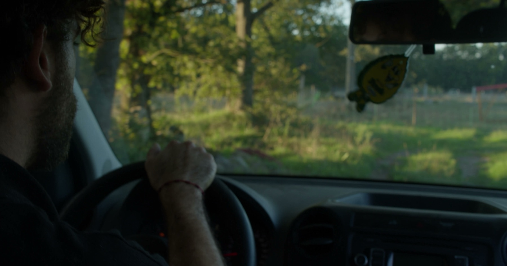
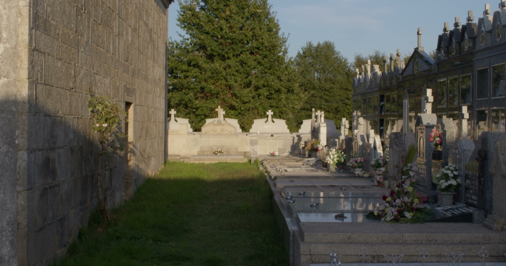
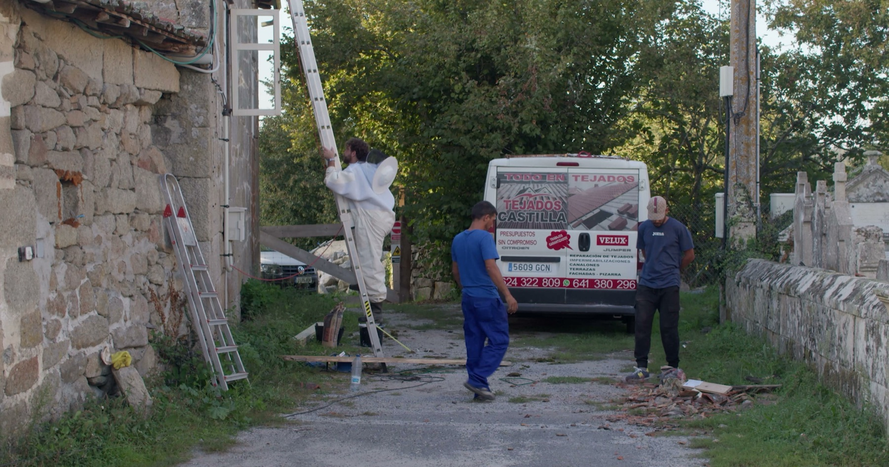
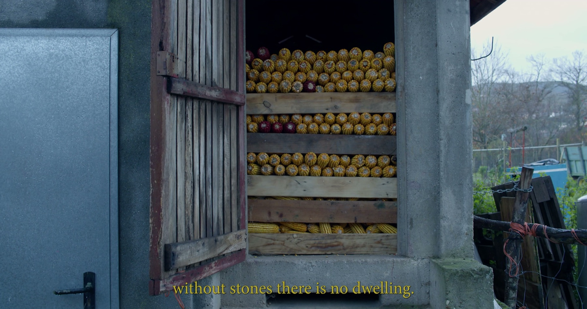
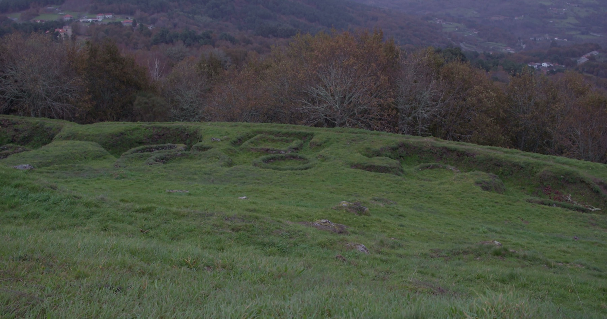

01 / 11

02 / 11

03 / 11

04 / 11

05 / 11

06 / 11

07 / 11

08 / 11

09 / 11

10 / 11

11 / 11
Director · Fotógrafo — Ciudad de México
Documental observacional rodado en Galicia a lo largo de cinco viajes. Un solo día imaginado — amanecer a noche — construido con las vidas de personas que no se conocen entre sí: canteros, tamborileiros, apicultores, el entroido. Actualmente en postproducción.




